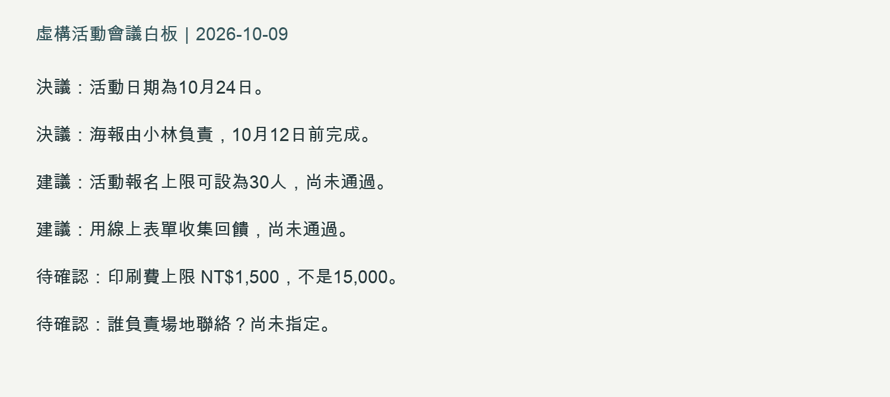

從圖片、音訊與 PDF 擷取資訊
使用真實附件練習，逐項對照原始素材並標記未知。
本節完成物：使用真實附件練習，逐項對照原始素材並標記未知。
本節 120 分鐘：練習時間可依進度調整
0–24 分
理解任務與完整示範
24–60 分
跟著操作並核對結果
60–96 分
自己練習與修正
96–120 分
保存、驗收與下一步
使用真實附件練習，逐項對照原始素材並標記未知。
先選一條核心路徑：圖片。完成物是「決議、建議、待確認」三類清單與人工修正紀錄。先下載虛構白板PNG，圖片內容可與白板文字版核對；文字版可作沒有上傳權限時的備援，但不算圖片辨識測試。

在新對話用附件按鈕選PNG，確認縮圖出現，再送出下方完整要求。
請讀取附件白板，分成決議、建議、待確認三類。
逐項保留日期、負責人、金額與未定狀態。看不清的字標「需人工核對」。
不要把建議寫成已通過，也不要指定原圖沒有的負責人。
核對答案：決議是10月24日活動，以及小林10月12日前完成海報。建議是30人上限、線上回饋表，兩項未通過。待確認是NT$1,500是否足夠，以及場地聯絡負責人。1,500很容易被誤讀為15,000，須放大原圖自己查。
把回應逐項對照圖片，用標記「一致／需修正／無法確認」。如果寫30人已核准，追問「原圖是建議，請保留未通過狀態」。若金額不清楚，從原圖讀到1,500後補充；不要假裝是AI第一次就讀對。
保存附件、初稿與修正版。沒有縮圖時先檢查格式、檔案與帳號能力；可用文字版做整理，但紀錄寫「文字備援」，不寫圖片辨識成功。
下載2–3分鐘合成會議MP3，以及對應逐字稿TXT。這是三位虛構發言者的合成語音；沒有真人個資。先播放，再確認當日工具能上傳音訊；若不能，使用逐字稿做文字整理。
完整要求：「請整理附件會議的已通過決議、未通過建議與待辦；待辦列負責人與期限，沒有指定就寫待確認。請標出不確定的轉錄詞。」核對結果應保留海報小林／10月12日；場地聯絡負責人與期限皆待確認；印刷1,500是預算，不是已支出。缺音訊權限只能驗文字整理，不能填轉錄通過。
下載星河案v1 PDF，問「交付哪些成果、印刷預算多少、供應商是誰？請附頁碼」。答案是海報PDF及報名表連結（p3）、1500元（p2）、供應商未定（p3）。無法選取文字或上傳時，先回素材檢查，不用猜。
三種素材的完整核對答案可在做完後查看。下一部分會同時使用多份PDF，重點轉成版本與引用的判斷。
../assets/part1-4-safe-practice-pack.md 的會議文字或週報原料，列出可驗收結果；Solo：用一份不含個資的素材完成處理；Check：保存原始檔、轉換結果、人工校對與限制。沒有可用檔案時先用素材包，外部工具實跑標記 NOT_RUN。